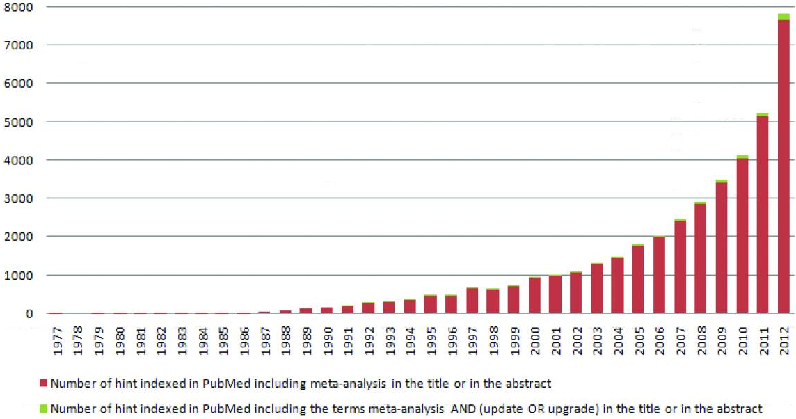
Accounting for Heterogeneity in Meta-Analysis
Caspar J. van Lissa
2025-03-10
Preparing for the Workshop
- Install R and then RStudio
- Follow the instructions here: https://posit.co/download/rstudio-desktop/
- Open RStudio.
Now, run the setup script for this workshop.
In the window labeled “Console”, paste this code and press [Enter]:
source("https://raw.githubusercontent.com/cjvanlissa/meta_workshop/refs/heads/master/check_function.R")- If you have your own data: after running the
source()command above, you can use the functioncheck_data().- Load your own data into R as usual, and check if you can use it for the workshop exercises by running:
check_data(your_data_object)
Today
- Use your own data for worked examples
- Demo data are available
- 20 minutes: Basic Models for Meta-Analysis
- 10 minutes: Q&A
- 30 minutes: Exercises
- 20 minutes: Advanced Methods for Dealing with Heterogeneity
- 10 minutes: Q&A
- 30 minutes: Exercises
Conceptual Understanding
I’m going climbing with two groups of friends
One person from each group tells me the average level of their group (French grade)
I will choose a route based on the average level of all friends
\[ \begin{aligned} X_1:& [5, 5, 6, 6, 5] &M_1 &= 5.4 \\ X_2:& [4, 8] &M_2 &= 6 \\ \end{aligned} \] What is the overall mean?
\(\frac{5.4+6}{2} = 5.7\) VS \(\frac{5.2}{5} + \frac{6.5}{2} = 4.08\)
Meta-analysis similarly calculates a weighted mean of the effect sizes.
Note: Second group has high variability!
Definition
Quantitative systematic procedures for synthesizing results of previous research to arrive at conclusions about the body of research.
- Quantitative: numerical output
- Systematic: methodical
- Synthesizing: putting together
- Previous research: whats already done
- Conclusions: new knowledge
Evidence pyramid
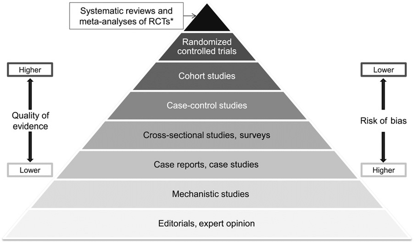Cases and variables
In primary research:
- Cases: Individual participants
- Variables: Characteristics / individual differences
In meta-analysis:
- Cases: Studies, or effect sizes
- Variables: Between-study differences, or ‘moderators’
Not covered:Individual participant data meta-analysis
- Cases: Individual participants
Popularity
Popularity grows exponentially (Ioannidis 2016)
- Output of primary research keeps increasing (Bornmann and Mutz 2015)
- “Replication crisis” increased demand for reliable findings
- Incentives:
- Limited effort and cost
- Highly cited and respected
Goals of meta-analysis
- Summarize effect
- Increase statistical power and precision
- Test hypotheses
- Objectively synthesize literature
- Identify knowledge gaps and future directions
- Power analysis for future studies
- Identify effect heterogeneity
- Explain effect heterogeneity
Steps in meta-analysis
- Define research question and hypotheses
- Define the criteria for including and excluding studies
- Conduct search
- Determine eligibility
- Code effect size and moderators
- Select or translate results from each study using a common metric
- Estimate overall effect size
- Evaluate heterogeneity
- Explore heterogeneity
- Sensitivity analyses
Effect sizes
What effect sizes?
Which Effect Sizes?
- “Descriptive” statistics (mean, SD, p, Cronbach’s alpha)
- Differences between groups
- Mean difference (between groups, repeated measures)
- Difference in over-time change between groups
- Risk ratio
- Association
- Correlation
- Regression coefficient
- Etc.: any statistic with standard error
What do you need?
- Study must report the required effect size…
- …or sufficient statistics to compute it
- You can convert from some effect sizes to others
Resources for converting:
Effect sizes: Pitfals
- Control variables
- Dependency in the data (e.g., repeated measures, multiple studies on same dataset)
Models for Meta-Analysis
How to combine?
Starting with the summary statistic for each study, how should we combine these??
A simple average gives each study equal weight
This seems intuitively wrong
All studies are created equal.. but some are more equal than others
Weighting studies
More weight for more informative studies
- More participants
- Lower variance
This is reflected in the sampling variance (standard error)
Effect sizes: Standard error
Standard error affects the weighting in meta-analysis
Also referred to as sampling variance
- SE is the SD of the sampling distribution
- \(SE^2\) is the variance of the sampling distribution
- It is a measure of precision / uncertainty about the sample statistic as an estimator of the population value
- Small SE: Accurate estimate
- Big SE: Uncertain estimate
E.g., SE of the mean:
\[SE_\mu = \frac{SD}{\sqrt{n}}\]
Effect sizes: Sampling distribution
Effect sizes: Sampling distribution
Weighting studies: Inverse-variance
Inverse-variance method:
\[ W_i = \frac{1}{v_i} = \frac{1}{SE^2_i} \]
More precise study: Bigger weight
Effect sizes: Finding the SE
Standard error is usually based on:
- Relevant measures of variability (more variable –> bigger SE)
- Sample size (bigger sample –> smaller SE)
SE is almost always reported for
- E.g., regression coefficients
For other statistics, SE is almost never reported:
- Correlation (but easily constructed from \(r\) and \(n\))
- Cronbach’s alpha
Familiarize yourself with the formula for the SE of your effect size BEFORE you collect data!
Fixed effect Model
Fixed effect model
Assumption: true effect is the same in each study (fixed) (Hedges, 1998)
Differences between studies due to random (sampling) error
This assumption probably (?) holds for:
- Replication studies
- Multiple studies within one paper
Fixed effect: Formulas
For a collection of \(k\) studies, the observed effect size \(y_i\) of each individual study \(i\) (for \(i = 1, 2, \dots k\)) is given by:
\[ \begin{aligned} y_i &= \theta + \epsilon_i &\text{where } \epsilon_i \sim N(0, \sigma^2_i) \end{aligned} \]
Fixed effect: pooling
Inverse-variance weights
Variance is the \(SE^2\)
\[ W_i = \frac{1}{v_i}\]
Summary effect:
\[\hat{\theta} = \frac{\sum_{i=1}^{k}(W_i*y_i)}{\sum_{i=1}^{k}W_i}\]
Heterogeneity
What is heterogeneity?
How to deal with heterogeneity?
Interpreting heterogeneity indices
Heterogeneity
Common application of meta-analysis:
- Summarizing heterogenous body of literature
Differences between studies with respect to:
- Patients: diagnosis, in- and exclusion criteria, etc.
- Interventions: type, dose, duration, etc.
- Outcomes: type, scale, cut-off points, duration of follow-up, etc.
- Quality and methodology: randomised or not, allocation concealment, blinding, etc.
Random effects model
Assumption: True effect follows (normal) distribution
Differences between observed effect sizes arise from two sources of variance:
- Sampling error
- Normal distribution of true effect sizes
- Between-studies heterogeneity
- Variance of the distribution
Assumption holds:
- When there are random uncorrelated, but no systematic, differences between studies
Random effects: Formulas
The random-effects model is thus given by:
\[ \begin{aligned} y_i &= \theta_i + \epsilon_i &\text{where } \epsilon_i &\sim N(0, \sigma^2_i)\\ \theta_i &= \mu + \zeta_i &\text{where } \zeta_i &\sim N(0, \tau^2) \end{aligned} \]
Results in wider confidence intervals (conservative)
Studies are weighted more equally when between-studies heterogeneity is large
Random effects weights
Two sources of variance:
\[ W_i = \frac{1}{v_i+\tau^2}\]
Summary effect:
\[\hat{\theta} = \frac{\sum_{i=1}^{k}(W_i*y_i)}{\sum_{i=1}^{k}W_i}\]
Heterogeneity statistics: tau2
\(\tau^2\) is the (estimated) variance of the distribution of true effect sizes
It is expressed in the same units as the within-studies variance
Heterogeneity statistics: Q
Q is a weighted sum of squared deviations of observed effect sizes around the pooled effect size
- Test of Q has poor power
- People sometimes use \(\alpha = .10\)
- But: Few studies - usually not significant
- Many studies - essentially always heterogeneity
- So, not very useful
\(Q = \sum_{i=1}^{k}W_i*(y_i-\hat{\theta})^2\)
Heterogeneity statistics: I2
\(I^2\) describes the percentage of variation across studies that is due to heterogeneity rather than chance (Higgins and Thompson, 2002; Higgins et al., 2003).
- Are individual effects further away from pooled effect, beyond what is expected by chance?
\[I^2 = 100\% * \frac{Q-df}{Q}\]
- Unlike Q it does not inherently depend upon the number of studies considered (standardized)
- But no longer an absolute measure of heterogeneity!
Heterogeneity
Low heterogeneity:
- Effect is robust
- Estimate true effect size with better precision than we could with a single study
High heterogeneity:
- Quantify the variation
- Explore / explain it
Pitfalls
Data-dependent analysis decisions
- Test for heterogeneity
- If that test is not-significant, then use a fixed-effect model
- It is better to make assumptions on theoretical grounds
- And report assumption checks that suggest potential violations
- Otherwise you risk overfitting the data
Moderators
Systematic differences between studies
Causes for heterogeneity
Comparing the effect size in different groups of studies
- Several scales used in your field
- Competing experimental paradigms
- Experimental VS cross-sectional research
- Standard dose VS high dose
- Experimental manipulation VS multi-week intervention
You can code all these differences as moderator variables
Control for them in the analysis
Meta-regression
\[\theta_i = \beta_0 + \beta_1X_{1i} + \dots + \beta_pX_{pi} + \zeta_i + \epsilon_i\]
Really the same as normal regression analysis, but with an extra “error” term for the heterogeneity:
\[y_i = \beta_0 + \beta_1X_{1i} + \dots + \beta_pX_{pi} + \epsilon_i\]
Dummies in meta-regression
The effect of a grouping-variable can be expressed two ways.
By estimating both group means, using two dummies and no intercept:
\[\theta_i = \hat{\gamma}_1D_{1i} + \hat{\gamma}_2D_{2i} + \zeta_i + \epsilon_i\]
By estimating one intercept, reflecting the mean value of group one, and a dummy, reflecting the difference between group one and two:
\[\theta_i = \beta_0 + \beta_1D_{1i} + \zeta_i + \epsilon_i\]
Mathematically, they are identical. We can call the first one “ANOVA specification”, and the second one “regression specification”
Second part of the day
How to deal with heterogeneity
- Studies are incomparable:
- Do not pool at all (apples / oranges)
- NEW: aggregate evidence using Product Bayes Factor
- (Close) replications: fixed effect model
- Conceptual replications with minor differences: random effects model
- Known systematic differences: Explain heterogeneity
- Meta-regression
- Unknown systematic differences: Explore heterogeneity
- Regularized meta-regression
- Random Forest meta-regression (MetaForest)
Exploring Heterogeneity
The challenge
In heterogeneous bodies of literature, there are many between-studies differences
Differences in samples, designs, measurements, and methods
Small sample, many predictors (n < p)
- Power issues
- Interactions? Non-linear effects?
- Lack of theory to identify moderators
- Existing methods not suitable for exploratory moderator analysis
Curse of Dimensionality
Which Moderators Matter?
- Use theory
- Few theories address study-level moderators Thompson & Higgins, 2002
- Ecological fallacy: individual level vs study level
- Few theories address study-level moderators Thompson & Higgins, 2002
Use Statistics
- (Bivariate) null-hypothesis significance tests
- P-values are not designed for model selection, but for inference on a-priori hypotheses
- Multiple testing problem
- Overfitting
- P-value depends on all other variables in model
- Information criteria
- Does penalize for model complexity
- Avoids multiple testing
- Must explicitly define candidate models
- “Variable selection”
- Focal issue in machine learning (Hastie, Tibshirani, & Friedman, 2009)
Machine Learning Moderator Selection
Regularized meta-regression Random forest meta-regression
Regularized meta-regression
\[ T_i = \beta_0 + \beta_1x_1 + \ldots + \beta_px_p + \zeta_i + \epsilon_i \] Typically estimated using REML
\[ RSS = \sum^n_{i=1}(y_i-\hat{y_i})^2 \]
- Minimizes the RSS
- Low bias, on average, coefficients are close to true value
- High variance: estimated coefficients vary from one sample to the next
Regularization
Tradeoff between bias and variance
Regularization decreases variance by increasing bias
LASSO regression minimizes RSS plus sum of (absolute) coefficients
\[ PRSS = RSS + \lambda \sum_{j = 1}^p{|\beta_j|} \]
Bayesian Regularization
- Combines information from data with prior expectations about parameter values
- LASSO penalty corresponds to a double exponential prior (Park & Casella, 2008)
- I.e.: “I expect most coefficients to be (near) zero”
- Valid inference for all model parameters and derived quantities
- Intuitive interpretation
- Can be extended to OTHER regularizing priors with superior performance
- Horseshoe prior has heavier tails (Carvalho, Polson, & Scott, 2010)
- Can be estimated in existing software (STAN)
Priors
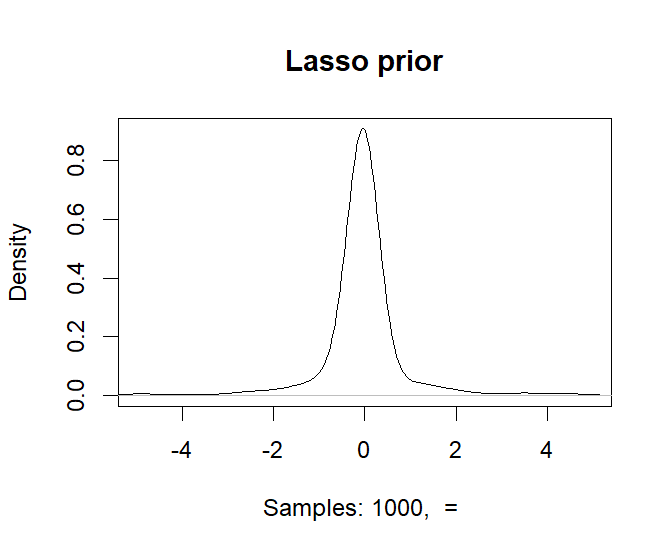
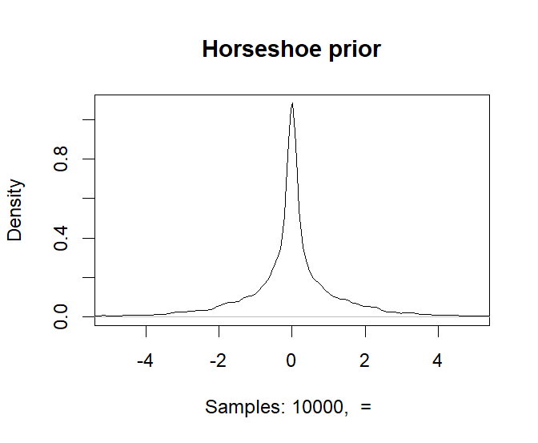
Introducing brma
R-package pema (penalized meta-analysis) implements BRMA with back-end in STAN
- Compiled code: very fast and easy to install
- Compatible with rstan and related packages
- All plots and summary functions are available
- Validated using simulation study (Van Lissa, Van Erp, & Clapper, 2023)
- LASSO and Horseshoe priors VS restricted maximum likelihood meta-regression (metafor)
- https://DOI.org/10.1002/jrsm.1628
Performance
Compared to RMA, BRMA showed:
- Better predictive performance (R2 in a new sample)
- Less overfitting (i.e., less negative R2 in new sample)
- Better small sample performance (RMA convergence issues)
- Higher sensitivity (better at rejecting irrelevant moderators)
- Lower specificity (worse at detecting true moderators)
- Overall accuracy: RMA = 0.95, HS = 0.95, LASSO = 0.93
- Regression coefficients biased towards zero, by design
- But all algorithms showed bias, even RMA
- Residual heterogeneity: no additional bias
Output
BRMA mixed-effects model (k = 734), method: NUTS sampling
tau^2 (n = 734): 0.44 (SE = 0.00)
mean se_mean sd 2.5% 25% 50% 75% 97.5% n_eff Rhat
Intercept -38.00 0.43 15.55 -67.91 -48.44 -38.31 -27.46 -6.70 1323.09 1.00
mTimeLength -0.01 0.00 0.01 -0.02 -0.01 -0.01 -0.00 0.00 1084.11 1.00
year 0.02 0.00 0.01 0.00 0.01 0.02 0.02 0.03 1323.35 1.00
ageWeek -0.01 0.00 0.01 -0.02 -0.01 -0.01 -0.00 0.00 956.49 1.01
speciesrat 0.19 0.00 0.07 0.05 0.14 0.19 0.24 0.32 1034.83 1.00
sexM 0.14 0.00 0.07 0.00 0.09 0.15 0.19 0.29 1014.89 1.01
tau2 0.44 0.00 0.04 0.37 0.41 0.44 0.47 0.52 1134.70 1.00
Intercept *
mTimeLength
year *
ageWeek
speciesrat *
sexM *
tau2 *
*: This coefficient is significant, as the 95% credible interval excludes zero. n_eff is the effective sample size, Rhat is the potential scale reduction for multiple chains (Rhat = 1 indicates convergence).Summary: brma
- Helps eliminate irrelevant moderators / prevent overfitting
- Suitable small sample solution
- Readily interpretable for reviewers and readers
- Can accommodate predictors of any measurement level
- Readily available in user friendly software
Example Studies
Method reference: Van Lissa, van Erp, & Clapper (2023). Selecting relevant moderators with Bayesian regularized meta‐regression. Research Synthesis Methods, 14(2), 301-322.
Tree-based Methods
MetaForest
Single Tree algorithm
1. Split the data on the moderator/value that leads to the most
homogenous post-split groups on the dependent variable
2. IF the number of cases in the post-split group is smaller than X, stop
- Else, repeat steps for the post-split groupTree
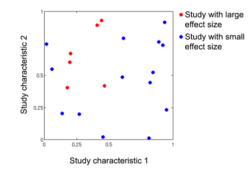Tree
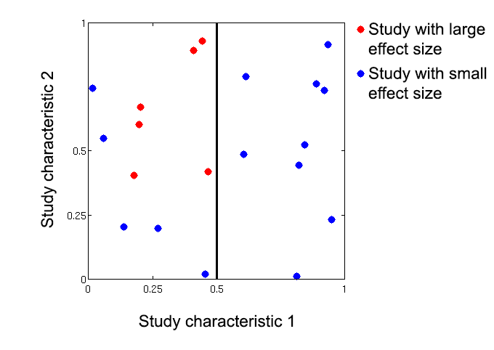Tree
Tree
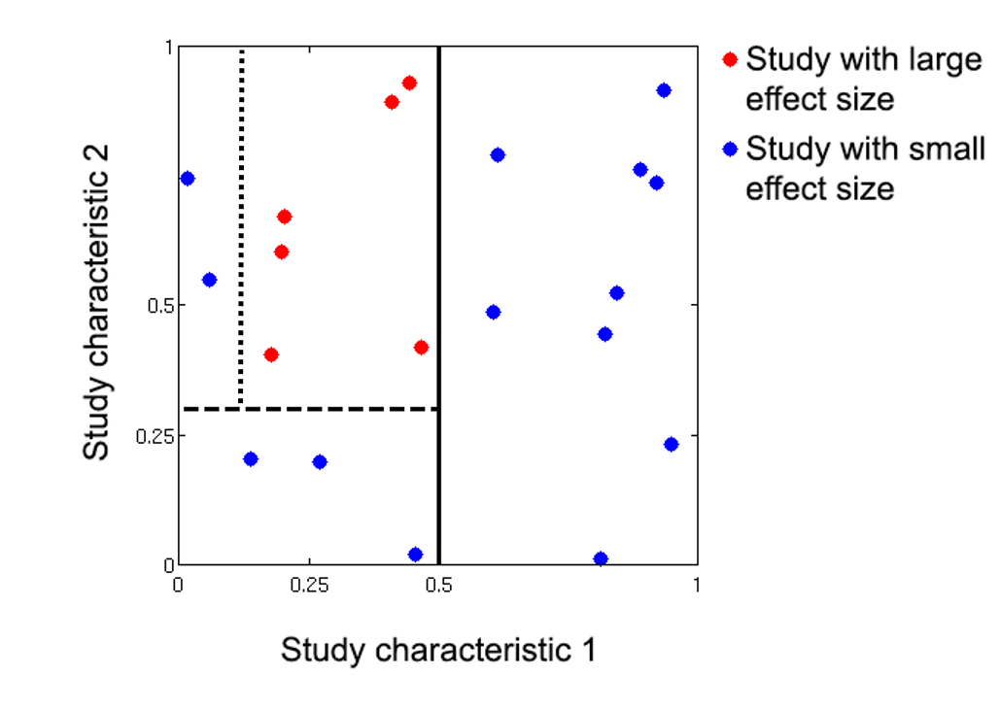Tree
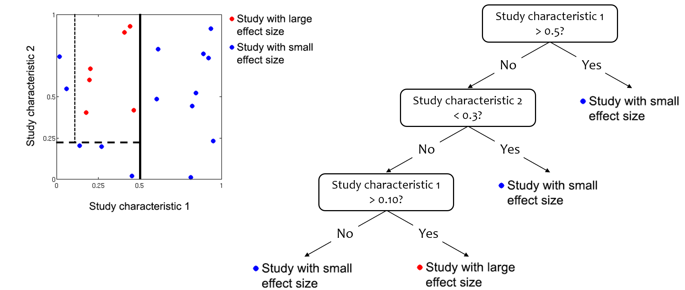
Tree: Advantages
- Trees easily handle situations where \(n<p\)
- Irrelevant predictors are ignored
- Trees intrinsically capture interactions and non-linear effects
- Represented as sequence of splits
- Both conditions are likely met when meta-analyzing a heterogeneous body of literature
Random forests
Single trees are very prone to overfitting
Random Forests algorithm
1. Draw many (+/-1000) bootstrap samples
2. Grow a trees on each bootstrap sample
3. To make sure each tree learns something unique,
they are only allowed to choose the best moderator
from a small random selection of moderators at each split
4. Average the predictions of all these treesRandom forests: Advantages
Random forests are robust to overfitting
- Each tree captures some “true” effects and some idiosyncratic noise
- Noise averages out across bootstrap samples
Random forests make better predictions than single trees
- Single trees predict a constant value for each “node”
- Forests average predictions of many trees, leading to smooth prediction curves
MetaForest
Apply meta-analytic weights to random forests (in bootstrapping step)
More precise studies are more influential in building the model
MetaForest: Reporting
- Predictive \(R^2\) for new data: \(R^2_{oob}\) and \(R^2_{cv}\)
- Variable importance (which moderators most strongly predict effect size)
- Partial dependence plots
MetaForest: Variable Importance
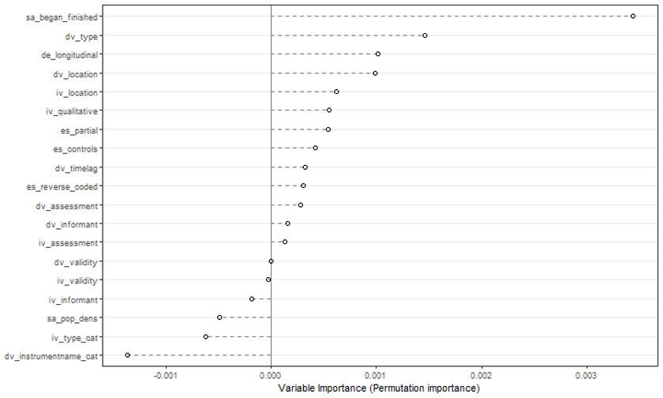MetaForest: Partial Dependence

MetaForest: Partial Dependence
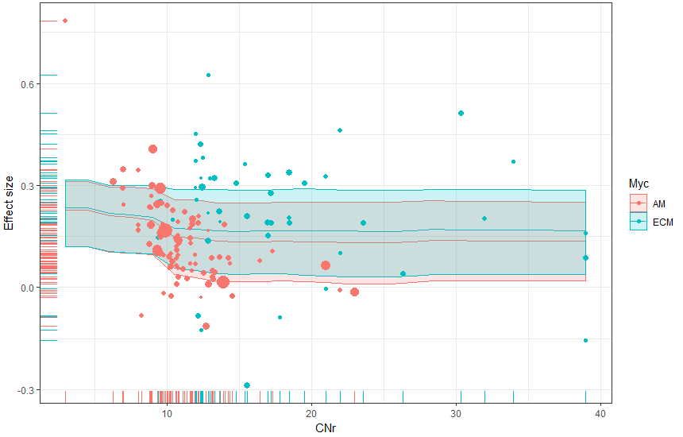MetaForest: Validation
Several simulation studies examining:
- Predictive performance
- Power
- Ability to identify relevant / irrelevant moderators
- Van Lissa, 2017: https://osf.io/khjgb/
MetaForest: Results
MetaForest had sufficient power in most conditions, even for as little as 20 studies,
- Except when the effect size was small (β = 0.2), and residual heterogeneity was high (τ2 = 0.28)
Power was most affected by true effect size and residual heterogeneity, followed by the true underlying model
MetaForest: Workflow
As final check:
- Classic meta-analysis for summary effect
- (Optional:) Test theoretical moderators
- MetaForest as exploratory check for relevant moderators
As pre-screening:
- MetaForest as exploratory check for relevant moderators
- (Optional:) Test linear model of relevant moderators
- Classic meta-analysis for summary effect
Example Studies
Method reference: Van Lissa, 2020. Small sample meta-analyses: Exploring heterogeneity using MetaForest. In Small sample size solutions (pp. 186-202). Routledge.
Aggregating Evidence
The Problem
Incomparable studies (apples and oranges)
- Colinear moderators
- Incomparable effect sizes (e.g., bivariate AND partial regression coefficients)
- Theoretically incomparable (e.g., human VS rat, mouse, and cricket models of anxiety)
Solution: Product Bayes Factor
- PBF aggregates evidence for hypotheses across heterogeneous replication studies.
- Validated via simulation study varying sample size, number of replications, and reliability.
- PBF shows greater sensitivity than random-effects meta-analysis (RMA) but lower specificity.
- Useful when heterogeneity assumptions fail
Meta-Analysis vs. Bayesian Evidence Synthesis
- Meta-analysis: Estimates a population effect size/heterogeneity
- BES (PBF): Synthesizes evidence for one informative hypothesis across heterogeneous studies
Informative Hypotheses
- Explicit hypothesis about theoretically-expected relationships
- About parameters of interest (e.g., \(\beta\)), using (in)equality constraints (
=, <, >) - Null hypothesis \(H_0\) is a special case: \(H_0: \beta = 0\).
- Example: treatment effect exceeds Smallest-Effect-Of-Interest (SESOI), \(H_i: \beta > 0.1\).
- Dose-response effect: \(H_i: (\beta_1 < \beta_2 < \beta_3) > 0.1\).
Bayesian Informative Hypothesis Tests
- Evidence for \(H_i\) relative to another hypothesis expressed as Bayes factor (BF).
- Complementary hypothesis \(H_{!i}\): “not \(H_i\)”.
- BF values: \(BF_{ic} = 10\) (10x more support for \(H_i\) vs \(H_c\)), \(BF_{ic} = 0.1\) (10x less support).
- BF differs from significance test:
- Continuous measure of evidence, not binary decision
- Robust to multiple- and sequential-testing.
- Decision criteria: \(BF > 3\) or \(BF > 10\) can be considered conclusive evidence.
How are Bayes Factors Calculated?
- Approximated adjusted fractional Bayes factor (AAFBF):
- Integrates posterior and prior distributions based on parameter constraints
- Uses Monte Carlo integration to approximate
- Results vary slightly, random seed ensures reproducibility
- Prior sensitivity:
- AAFBF uses minimally informative priors.
- Inequality constraints are not prior-sensitive, but equality constraints are
The Product Bayes Factor (PBF)
- Combines Bayes factors from individual studies by multiplying them
- Assumes all studies test the same theoretical relationship
- But not that the effect sizes are all comparable
Simulation Study
- PBF had higher overall accuracy (greater sensitivity, lower specificity) than RMA and IPD meta-analysis.
- Researchers should consider the trade-offs between sensitivity and specificity when selecting synthesis methods.
- PBF is ideal for small samples of heterogeneous studies
- Offers a quantitative conclusion where other methods fail
Output
PBF Sample.1 Sample.2 Sample.3 Sample.4
H1: y=0 1.3e-49 2.5e-01 6.5e-01 5.2e-29 1.5e-20
H2: y>0 1.1e+32 1.0e+03 2.1e+02 2.3e+13 2.3e+13
H3: y<0 2.9e-60 9.6e-04 4.8e-03 5.0e-32 1.3e-23Example Studies
Methodological References:
Example paper:
Publication bias
Publication bias
Assumption: Significant results are more likely to be published
- Well-supported by research
\(\alpha = .05\): We accept 5% risk of false-positive findings (Type I error)
Worst case scenario:
- Published literature is that 5%
- 95% of studies go into the “file drawer”
Including only published studies can introduce publication bias
Publication bias: Detecting it
Funnel plots
- X = effect size
- Y = SE (as a measure of uncertainty)
Publication bias: Funnel plot
Publication bias: Funnel plot
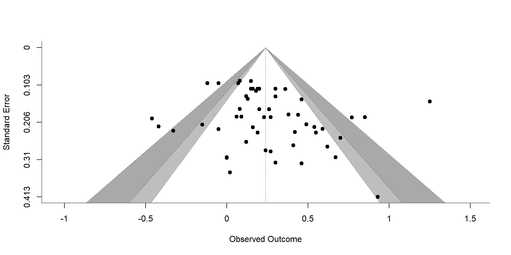Publication bias: Funnel with bias
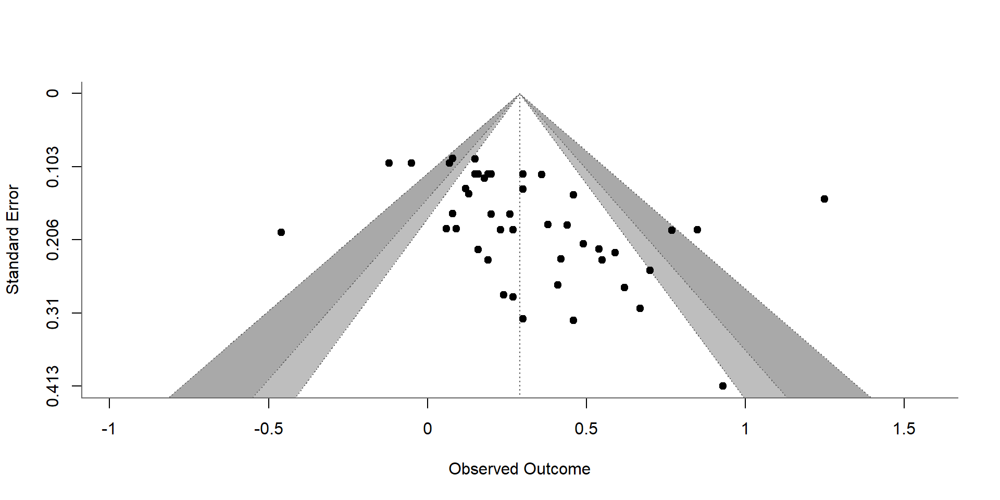Publication bias: Detecting it
Egger test: Formal test of funnel asymmetry
- Predicting effect size from its standard error
Trim and fill method:
- Small studies removed from funnel plot until it is symmetric
- Replace the small studies and balance them with studies on the opposite side of the funnel
Publication bias: Trim and fill
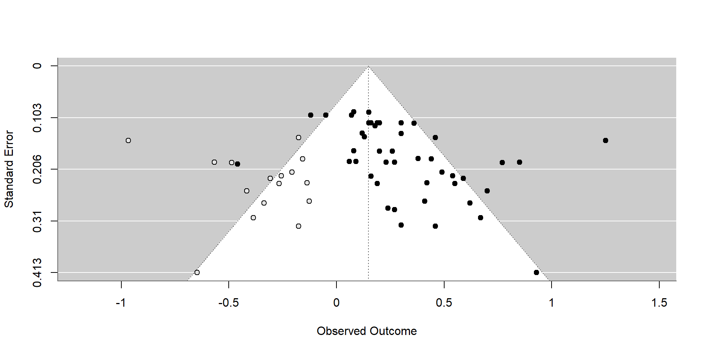Publication bias: File drawer
File drawer analysis (Rosenthal, 1979):
How many studies, averaging null results, would have to be added to reduce the combined significance level (p-value) to non-significance?
Publication bias: P-curve
Different assumption:
- Publication bias occurs because researchers p-hack their analyses (Head et al. 2015)
- New approach (Simonsohn, Simmons, and Nelson 2015)
- https://www.p-curve.com/
- Still quite experimental
Dependency in the data
Dependent data: Multiple samples
- Effects for two or more independent subgroups
- Impact of a treatment for two (or more) independent samples
Options:
- Treat the samples as independent “studies”; there is no problem with dependency
- Merge the samples. E.g., males and females have been reported separately; all your other studies combine them
- Use fixed-effect meta-analysis on the two (or more) subsamples
Dependent data: Multiple outcomes
The same participants reported on
- Multiple outcomes
- Multiple time points
Options:
- Unweighted average of effect sizes and SEs within study
- NOTE: You need the correlation between the different outcome variables
- Three-level multilevel meta-analysis
- Robust variance estimation
Three-level meta-analysis
Meta-analysis IS multilevel

Three-level meta-analysis
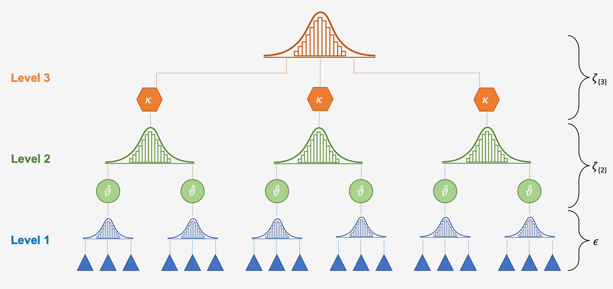Three-level meta-analysis: Formulas
\[ \left. \begin{aligned} y_{jk} &= \beta_{jk} + \epsilon_{jk} &\text{where } \epsilon_{jk} &\sim N(0, \sigma^2_{\epsilon_{jk}})\\ \beta_{jk} &= \theta_k + w_{jk} &\text{where } w_{jk} &\sim N(0, \sigma^2_{w})\\ \theta_{k} &= \delta + b_{k} &\text{where } b_k &\sim N(0, \sigma^2_{b}) \end{aligned} \right\} \]
Three-level meta-analysis
Advantage
- Account for dependent data
- No need to know sampling covariance for every pair of outcomes
- Can include predictors at effect-size and between-study level
Assumption
- All sampling covariances are the same
Sensitivity analysis
Sensitivity analyses
So many statistical options
Show that results are not affected by these decisions
Informal comparisons, often in table
Examples:
- Modifying the inclusion criteria ?
- Including and excluding questionable studies ?
- Including and excluding unpublished studies ?
- Weighting the analysis by study quality ?
- Trying different ways to impute missing data ?
- Ad each study, one by one, to see the change (or adding to forest plot)
Discussion questions
When does it make sense to perform a meta-analysis?
How many studies do we need?
How similar do the studies need to be?
What is the role of a cumulative meta-analysis?
What if the meta-analysis appears to conflict with a large-scale study?
Conflicting study
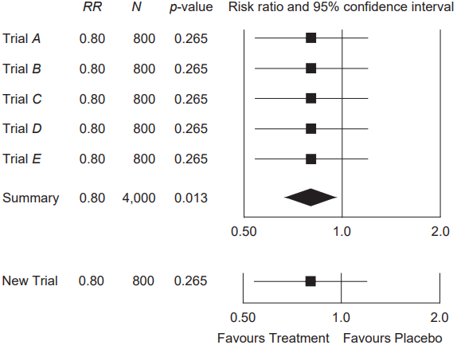
Criticisms
Criticisms of meta-analysis
- 1990 Charles Mann: future of meta-analysis
- One person compared it to alchemy
- Another compared it to terrorism
- 1993 New England Journal of Medicine:
- Meta-analyses so likely to be flawed that it would be preferable to stick with narrative reviews
- 2016 Ioannides:
- Mass Production of Redundant, Misleading, & Conflicted Meta-analyses
- China mass-produces meta-analyses, including on abandones areas of research
- Companies receive industry contracts to produce meta-analyses
- Many published meta-analyses have serious flaws
- Of the remaining, most have weak or insufficient evidence
Criticisms: Literature selection
Meta-analysis reflects only whats published, searchable, or shared
Studies are selected, not randomly sampled from all possible studies
- Violates assumption of random-effects model
“Standing on the shoulders of giants”
- Researchers follow in each other’s footsteps; this causes unknown dependency in the data
Criticisms: Ecological falacy
We usually care about effects on individuals
Ecological fallacy:
- Can’t make inferences about individuals from statistics about the group as a whole
Aggregation bias
- Pooled study-level effects might not reflect individual-level effects
Criticisms: Repeated testing
- Trust only pre-planned analyses (ideally pre-registered)
- Testing effects suggested by data considerably increases risk of false-positive results
- Post hoc analysis should be deemed exploratory
- Correct the p-values for repeated testing (e.g., Bonferroni)
Criticisms: Garbage
- Garbage in / garbage out
- Make sure to check quality of included studies
- Consider quality as moderator
- To see if small (bad?) studies have an undue effect, compare fixed-effect / random-effects estimates
Further learning
General preparation: Reporting
Familiarize yourself with reporting guidelines
Preferred Reporting Items for Systematic Reviews and Meta-Analyses (PRISMA)
General preparation: Quality
Quality of meta-analysis (AMSTAR)
1. Research questions / inclusion criteria use PICO (Pop, Intervention, Control, Outcome)
2. A-priori protocol
3. Explain selection of studies
4. Comprehensive lit search
5. De-duplication
6. Data extraction in duplicate
7. Justify excluded studies
8. Adequate detail
9. Assess RoB
10. Report funding of primary studies
11. Appropriate meta-analysis
12. Sensitivity analysis for RoB
13. Account for RoB
14. Report / discuss heterogeneity
15. Publication bias
16. Conflict of interest
Systematic reviews
Collaborate with a librarian if you have a good one!
Excellent materials by Janneke Staaks:
- Systematic Review Search Support https://osf.io/49t8x/
Siddaway, A. P., Wood, A. M., & Hedges, L. V. (2019). How to do a systematic review: a best practice guide for conducting and reporting narrative reviews, meta-analyses, and meta-syntheses. Annual review of psychology, 70, 747-770
Systematic reviews: Zotero
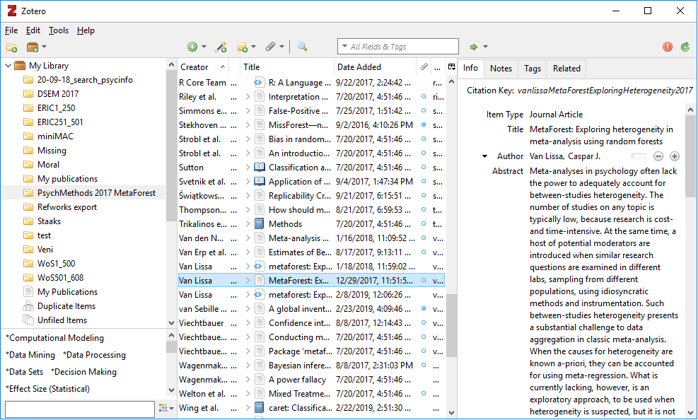Systematic reviews: Deduplication
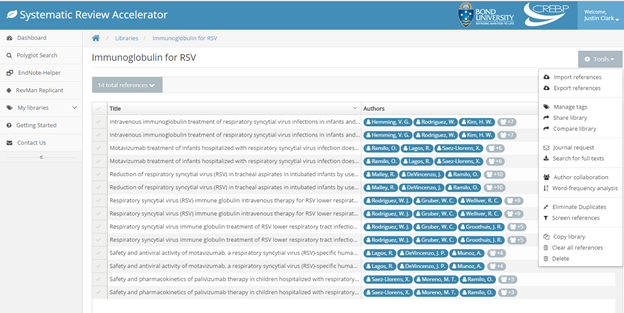Systematic reviews: Screening abstracts
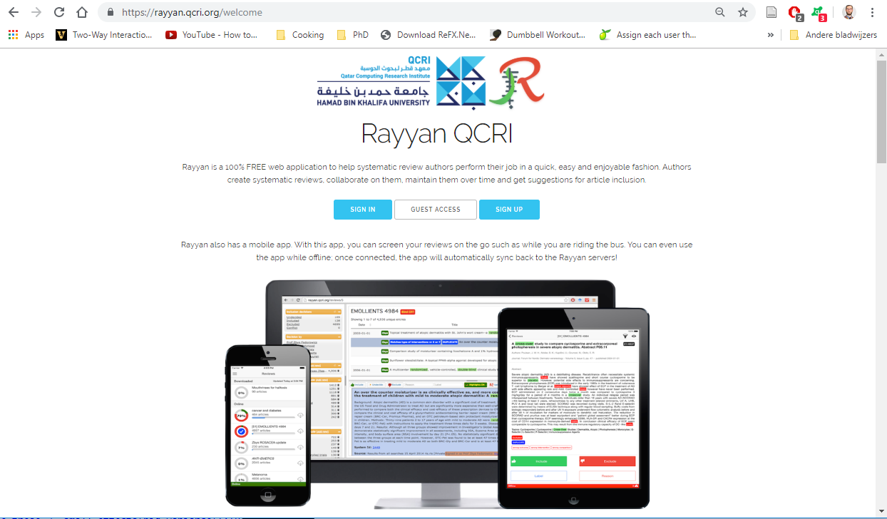Systematic reviews: Protocol
Need a clear protocol
Pre-register your meta-analysis!
Systematic reviews: Eligibility criteria
You can use these to eliminate studies, OR code them as moderators
Systematic reviews: Bias in studies
Code methodological components as moderators
- Random assignment
- Blind assignment (blind everything)
- Dropout
- Power analysis/optional stopping
Use risk of bias assessments
Systematic reviews: Open science
Share your data when finished (https://osf.io)
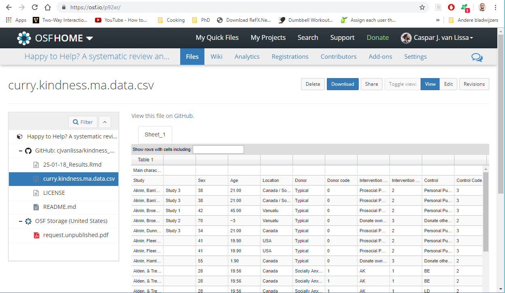metaSEM
Sometimes, research questions are about relationships between multiple variables
You can specify those as SEM/path model
- Code a (partial) correlation matrix per study
- Code N for correlation matrix
- Pool correlation matrices using
library(metaSEM) - Estimate SEM-model on pooled correlation matrix
- Mike Cheung and Suzanne Jak
metaSEM: Book
Continuously cumulating meta-analysis
Full data online, new studies can be added
Continuously cumulating: Metalab
Automatic systematic reviews
Identifying relevant articles using machine learning
- https://github.com/msdslab/automated-systematic-review
- Only if you can program in Python
This afternoon
Bring your laptop
Interactive tutorial using R / Rstudio
Manual online at https://cjvanlissa.github.io/Doing-Meta-Analysis-in-R/
Challenge: Repeat all the exercises in the manual, but use
Instead of
Reporting practices
Forest plot
Graphical display of results from individual studies on a common scale
Each study represented by black square and a horizontal line (CI:95%)
Area of black square reflects study weight
Forest plot
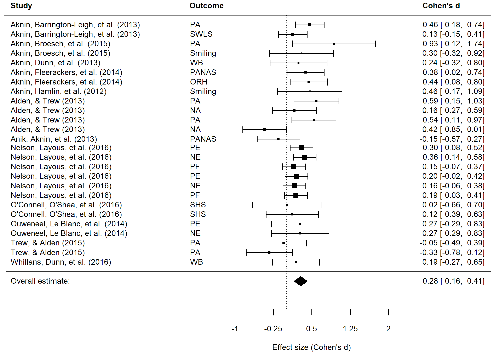Confidence intervals
Point estimate is the best guess of the effect
Confidence interval expresses our uncertainty about this guess
95% CI:
- Range of values we expect to include the true effect
- The “probability” is in the procedure!
- If we repeat this procedure 100 times, 95 of CIs will contain the true effect
Significance
Significance
- p-value from Z (or t-) test based on estimate and SE
- CI excludes zero
- But: Large (combined) samples, often significant
Relevance
- What effect size is clinically important/theoretically meaningful?
References
Bornmann, Lutz, and Rüdiger Mutz. 2015. “Growth Rates of Modern Science: A Bibliometric Analysis Based on the Number of Publications and Cited References.” Journal of the Association for Information Science and Technology 66 (11): 2215–22. https://doi.org/10.1002/asi.23329.
Ioannidis, John P. A. 2016. “The Mass Production of Redundant, Misleading, and Conflicted Systematic Reviews and Meta-Analyses: Mass Production of Systematic Reviews and Meta-Analyses.” The Milbank Quarterly 94 (3): 485–514. https://doi.org/10.1111/1468-0009.12210.